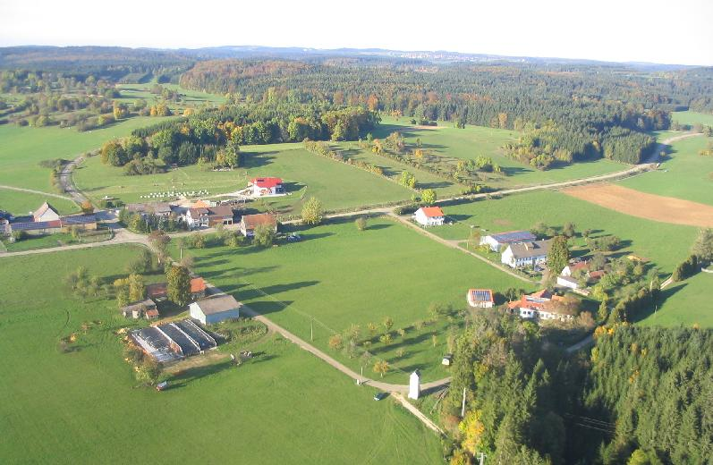
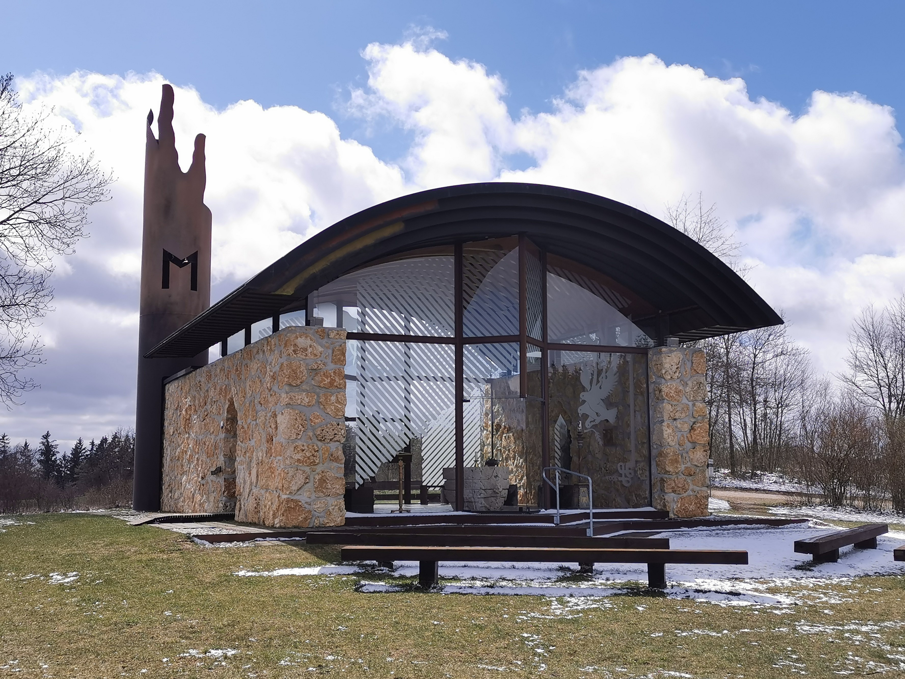
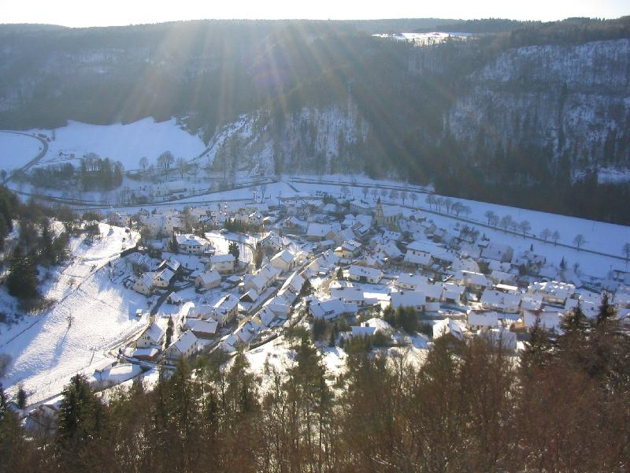
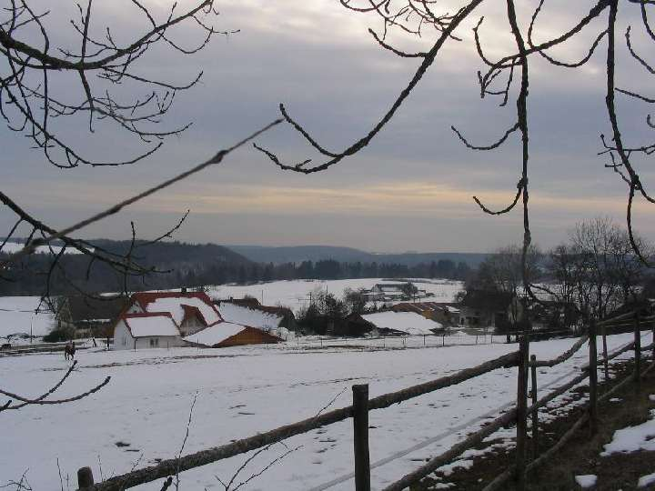
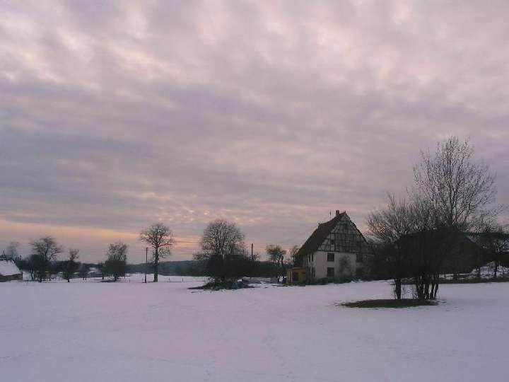
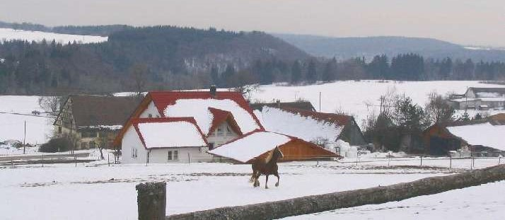
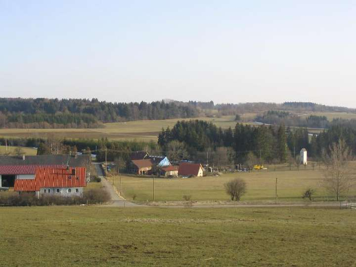
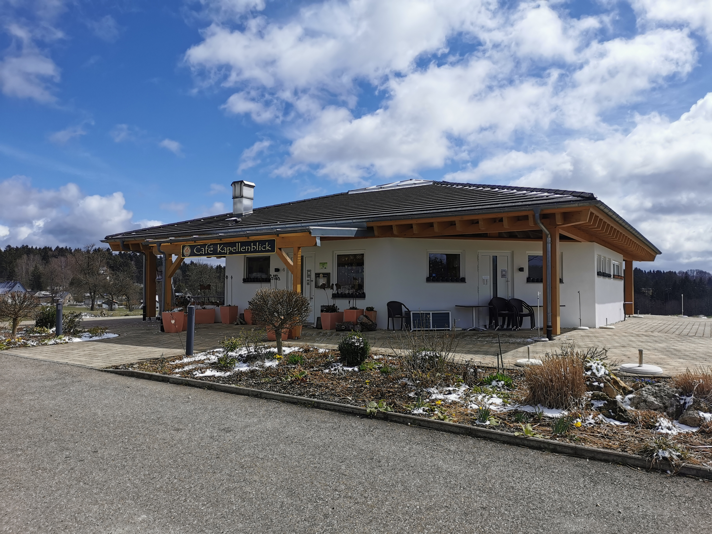
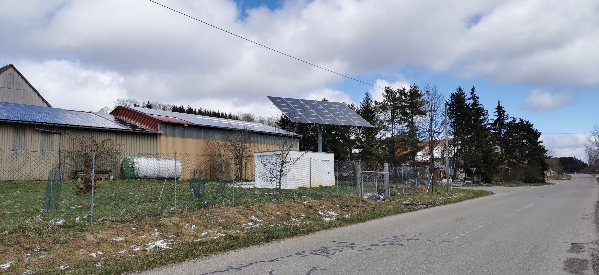

Luftbild von Gnadenweiler

Die katholische Wallfahrtskapelle Maria, Mutter Europas

Bärenthal im Sommer von einer Aussichtsplattform am Gnadenweiler

Bärenthal im Winter von der selben Plattform

Ausblick auf den Gnadenweiler im Winter

Letztes Licht in Richtung Westen

Pferd auf der Koppel eines Anwohners

Blick Richtung Süden im Sommer

Das Café Kapellenblick

Blick von der Hauptstraße

Überblick
❮
❯